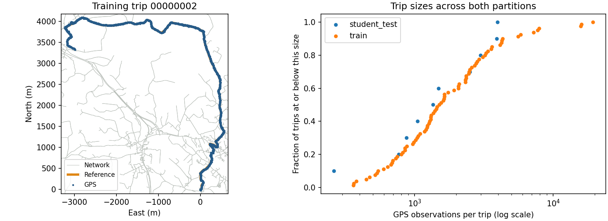
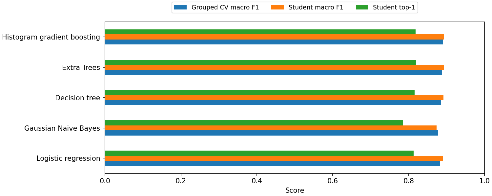

| trips | GPS_fixes | missing_GPS_cells | largest_gap_seconds | |
|---|---|---|---|---|
| split | ||||
| student_test | 10 | 19160 | 0 | 210.0 |
| train | 80 | 208417 | 0 | 153064.0 |

Each trip has a GPS track, directed road segments, road nodes and an ordered reference route. A reference row describes a traversed segment. Multiple GPS observations can correspond to it. The alignment estimates point-level labels from the ordered route.
Training used up to 100 evenly spaced fixes per trip from all 80 training trips. For each fix the models scored six candidate roads. Three-fold cross-validation kept whole trips together. Student-test evaluation used every fix on the ten supplied student-test trips.
| model | CV macro F1 | Student macro F1 | Student top-1 | Log loss (candidate present) |
|---|---|---|---|---|
| Logistic regression | 0.8821 | 0.8897 | 0.8127 | 0.5914 |
| Gaussian Naive Bayes | 0.8781 | 0.8735 | 0.7859 | 0.9291 |
| Decision tree | 0.8860 | 0.8916 | 0.8160 | 0.5013 |
| Extra Trees | 0.8876 | 0.8939 | 0.8198 | 0.5072 |
| Histogram gradient boosting | 0.8898 | 0.8929 | 0.8181 | 0.4630 |

Histogram gradient boosting had the highest mean grouped CV macro F1 (0.8898). It selected the aligned reference road on 81.81% of student-test GPS observations. These scores describe the classifier before route decoding.
Selected model: Histogram gradient boosting. Parameter: max_leaf_nodes. Search space: [3, 5, 7, 10, 15, 20, 25, 31, 42, 56]. The first three trials sampled the range. A Gaussian process then used the previous scores to select four further settings by expected improvement. Each setting used the same three training folds.
| trial | max_leaf_nodes | Grouped CV macro F1 |
|---|---|---|
| 1 | 3 | 0.88408 |
| 2 | 20 | 0.88824 |
| 3 | 56 | 0.88708 |
| 4 | 25 | 0.88887 |
| 5 | 31 | 0.88894 |
| 6 | 10 | 0.88848 |
| 7 | 15 | 0.88977 |
| CV macro F1 | Student macro F1 | Student top-1 | Log loss | Inference (s) | |
|---|---|---|---|---|---|
| Before tuning | 0.8898 | 0.8929 | 0.8181 | 0.4630 | 0.1962 |
| After tuning | 0.8898 | 0.8929 | 0.8181 | 0.4630 | 0.2139 |
Best tested setting: max_leaf_nodes = 15. Change in student top-1 accuracy: +0.00 percentage points.
Trip inventory · Experiment results · Tuning trials
AI-assisted reference run on the supplied development data.